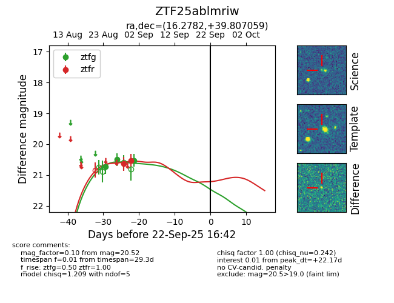
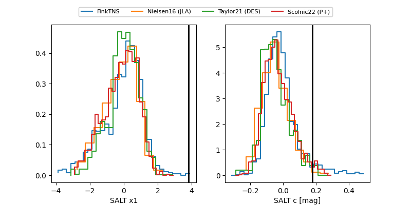

FINK: ZTF25ablmriw
Lasair: ZTF25ablmriw
ALeRCE: ZTF25ablmriw
ZTF25ablmriw (ztf,fink)
equatorial (ra, dec) = (16.2782,+39.80706)
galactic (l, b) = (125.7842,-22.98894)


last ztfg=20.52, ztfr=20.52
3 ztfg, 2 ztfr detections